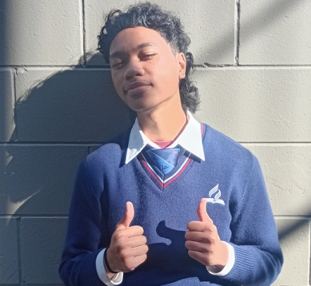

What Is ZeroNicoteens?
ZeroNicoteens is a website based movement which aims to reduce the rates of vaping among the Youth in Aotearoa, New Zealand.
Based in Auckland, this website aims to inform and warn specifically the Youth in New Zealand because of an alarming number of typically High School students and even Intermediate students across New Zealand have admitted to regularly using vapes, and these statistics have shown to be a little higher among the Pasifika Youth, but this website can also apply to just about anyone who stumbles across it with the same problems, or knowing someone with the same problems.
Therefore this website was created to not only address the issues with vaping but also try and steer our target audience toward trying better alternatives that do not involve inhaling toxic chemicals into their lungs for a quick rush of euphoria.

Bernard's anecdote:
"Kia Ora, my is Bernard Togiatau, and I have been struggling with
vaping for quite a while now, because I thought it was cool.
I thought that I'd fit in with the others if I started
vaping and so I snuck a vape into school and shared
it with my boys."
"The rush you get from the first vape is just...
wow- like it feels like the best
thing in the world..."
"..and then it's all downhill from there"
"You start depending on vapes for that same rush
because you want to feel good.
So you start sneaking in vapes anywhere
where it has a dark spot
so you can hide your face
from the world for a quick bump."
"And then you get addicted"
"Just being around some of my mates who also vaped
like me just pushed me into vaping even further. But luckily
my Whanau found out and intervened before it was
too late. We used this website to find useful resources
and helplines that helped me to go on a
journey of recovery from vaping."
"I recognise that it's going to be a long and difficult process,
but I've also realised that with the help and support of my Whanau
along this journey, it makes it a bit easier to go through."